Next: About this
document ...
Physics 231. Week 2. Motion in One
Dimension.
Outline: Motion in 1D
- Specifying the position of our "particle" (e.g., the
center-of-mass
of a person, car, etc.)
- Give distance from a reference position
- [Ex.] A wall in a room containing two people could define
x=0. "Mo is located at x=5'." then means that Mo is 5' to the right of
the wall.
- 1D problems are graphically shown on a number line
- the reference position is at x=0
- it can be horizontal or vertical as befits the problem
- there are 2 possible directions of motion, + (positive x)
or -
- 2D and 3D problems are graphically shown on cartesian
coordinate systems
- Distance vs displacement
- distance = path length = 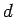
- displacement = difference in final and initial positions
= 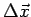
-
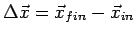, where 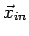
and 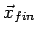 are the initial and final position vectors
- distance is a scalar
- displacement is a vector
- in 1D, a vector's direction is inferred by the sign
(e.g., ``-" means the negative 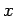 direction)
-
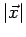 = the magnitude or
length of displacement vector
- in 1D, 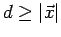
- in 1D, 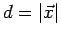 if there are no reversals in
direction.
- Average speed vs average velocity
- Average speed = 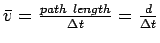
- Average velocity = 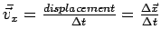
- [Ex.] Mo walks 5´ left, 6´ right, 1´ left,
and 8´ right in 30 seconds. What were his average speed and
velocity? Ans. 0.66´s and +0.27´s 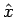.
- Instantaneous velocity and speed
- instantaneous velocity: 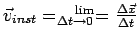
- instantaneous speed: 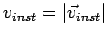
- [Note:] This goes against previous trend ...
- [Q:] Is 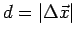? (Is distance just
the magnitude of displacement?) Ans: No
- [Q:] Is 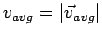 ? Ans: No
- [Q:] Is ? Ans: yes
- Example: P.6.
- Example: P.9.
- Acceleration = rate of change of velocity
- Average acceleration: 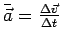
- Instantaneous acceleration: 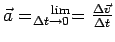
- Acceleration is caused by a force. 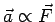.
- Direction of 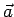 is indicated by
sign.
- 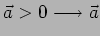 points in 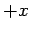 direction.
- 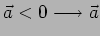 points in 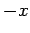 direction.
- If and 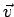 are
in same direction, object is speeding up
- If and are
in opposite direction, object is slowing up
- Ex. A car positioned left of the origin is speeding up as
it travels to the right. What are the signs of , 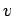, and 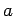? Ans: -, +, and +.
- Ex. P.17.
- Motion diagrams: pictures showing an objects x, v and a at evenly
spaced
intervals of time.
- One-dimensional motion with constant acceleration - equations
- Velocity equations
-
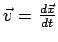 (for
any acceleration)
-
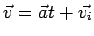 (uniform
a)
-
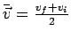 (uniform a)
- Position equations
-
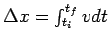 (any
acceleration)
-
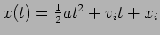 (uniform a)
-
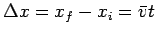, so 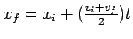 (uniform
a)
-
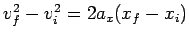 (uniform a)
- Use these equations for 1D motion problems with uniform
acceleration.
- Ex. P. 23.
- Free fall problems. (
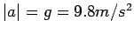)
- Ex. P. 43.
Next: About this
document ...
Jason Pinkney
2005-12-08